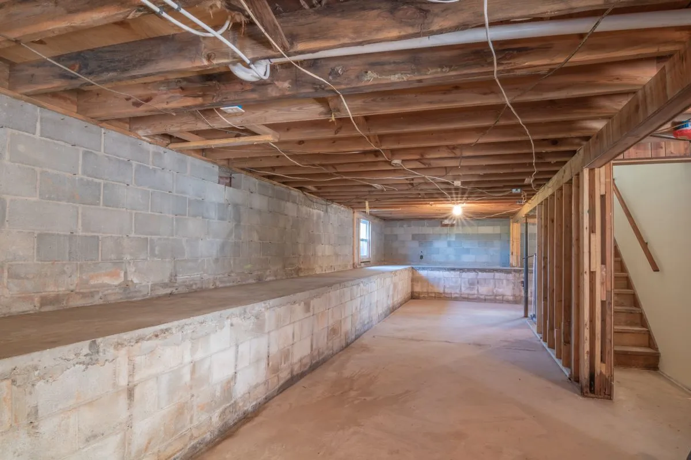

By Reno Rise. Published September 19, 2026. Last updated September 19, 2026. General planning information, not legal or engineering advice.

Basement underpinning lowers a basement floor by extending the foundation downward, and it is usually only needed when the ceiling is too low to be a workable living space. Ontario’s second-unit guide describes a basement minimum of about 1.95 metres (roughly 6 ft 5 in). Measure first. Then decide. In that order.
Underpinning is one of the most involved basement projects there is, which is why it deserves a sober look before anyone quotes it. The scary part is the digging. The sensible part is that you often do not need it.
When is underpinning needed?
Mostly when height is short. Older Toronto basements are more likely to fall below the target, though it varies house by house. If you are planning a secondary suite, height is one of the first things to check. See the legal secondary suite guide.
A familiar scenario: a homeowner notices one corner of the basement feels oddly cold and jokes that it is a portal. It is not a portal. It is missing insulation, and the fix is simple. Mystery is usually physics. Fix the physics, fix the mystery. Ceiling height works the same way: measure it before you assume the worst, and before anyone sells you a dig.
How do you measure ceiling height?
Measure from the finished floor level to the underside of the ceiling finish. Then subtract what will change: a subfloor and finished flooring, insulation and a fire-rated ceiling all cost you height. Beams and ducts can lower usable height in spots. Ask a designer which measurements apply to your project.
What are the alternatives to underpinning?
- A bench footing, which lowers part of the floor and leaves a ledge along the walls.
- Rerouting or lifting ducts and pipes that reduce usable height.
- Accepting a lower ceiling in rooms where a designer confirms it is acceptable for your plan.
Does underpinning need a permit?
Yes. Toronto Building lists basement underpinning as work that needs a building permit (see the City permit page). Expect engineered drawings, inspections, and sequencing that protects your house and your neighbours’.
What drives underpinning cost?
- How much of the perimeter is underpinned, and how far the floor is lowered.
- Soil and groundwater conditions, and access for equipment and material.
- Engineering, drawings and permit fees.
- New drainage, waterproofing and a new floor slab.
- Related work afterwards: plumbing, electrical and finishes.
Reno Rise does not publish underpinning price ranges because they depend heavily on the property. Ask for itemized quotes and compare what each includes. Picture the finished result: a tall, dry, bright basement you never have to duck in. That is the point of the whole exercise.
General information, not legal or engineering advice. Confirm your project with Toronto Building and a qualified designer or contractor. Reno Rise does not issue permits or give code advice.
Frequently asked questions
What is basement underpinning?
Underpinning extends a house’s foundation downward, usually in short sections, so the basement floor can be lowered and ceiling height gained.
When do I need to underpin my basement?
Usually when the ceiling height is too low for the use you have in mind. Measure first, because some basements already work and cheaper alternatives may exist.
Does underpinning need a permit in Toronto?
Yes. Toronto Building lists basement underpinning among the work that requires a building permit, and it typically involves engineered drawings and inspections.
What is the difference between underpinning and a bench footing?
A bench footing lowers part of the floor and leaves a ledge along the walls, which can mean less disruption than full underpinning. Which one fits depends on the house.
How much ceiling height does a basement apartment need?
Ontario’s second-unit guide describes about 1.95 metres (roughly 6 ft 5 in) for basements. A designer should confirm what applies to your project.
Request a Basement Assessment
Share a few details about your basement and your plans. Reno Rise reviews what you send and, where there is a suitable fit, may connect you with an independent professional. This does not confirm an appointment, a quote, an approval or a match.